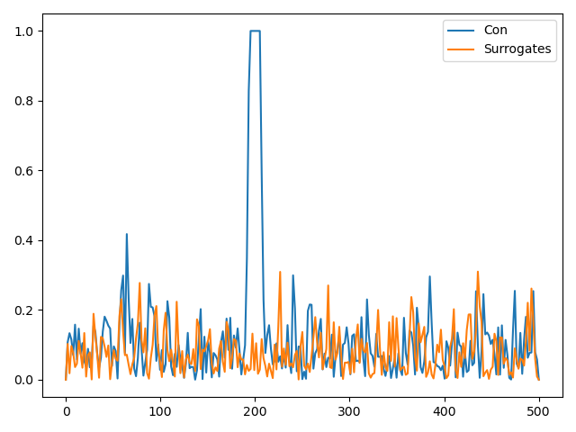

Note
Go to the end to download the full example code
Simulating Connectivity¶
Simple implementations of connectivity measures.
/Users/praveen.sripad/miniconda3/envs/jumeg/lib/python3.9/site-packages/matplotlib/cbook/__init__.py:1335: ComplexWarning: Casting complex values to real discards the imaginary part
return np.asarray(x, float)
# Authors : pravsripad@gmail.com
# daniel.vandevelden@yahoo.de
import os.path as op
import sys
import numpy as np
import matplotlib.pyplot as pl
import matplotlib.mlab as mlab
n_epochs = 120
sfreq, duration = 1000., 1000
times = np.arange(0, duration, 1 / sfreq)
amp , amp2 , nse_amp = 1., 1., 0.5
nfft = 512
nse1 = np.random.rand(times.size) * nse_amp
nse2 = np.random.rand(times.size) * nse_amp
x = amp * np.sin(2 * np.pi * 200 * times) + nse1
y = amp * np.sin(2 * np.pi * 200 * times + np.pi/5) + nse2
shift = 100 # integer
assert shift < sfreq * duration, 'Choose a smaller shift.'
#y = amp2 * np.roll(x, shift) + nse2
# coherence using mlab function
cohxy, freqs = mlab.cohere(x, y, Fs=sfreq, NFFT=nfft)
n_freqs = int(nfft/2 + 1)
def compute_mean_psd_csd(x, y, n_epochs, nfft, sfreq):
'''Computes mean of PSD and CSD for signals.'''
x2 = np.array_split(x, n_epochs)
y2 = np.array_split(y, n_epochs)
Rxy = np.zeros((n_epochs, n_freqs), dtype=complex)
Rxx = np.zeros((n_epochs, n_freqs), dtype=complex)
Ryy = np.zeros((n_epochs, n_freqs), dtype=complex)
for i in range(n_epochs):
Rxy[i], freqs = mlab.csd(x2[i], y2[i], NFFT=nfft, Fs=sfreq)
Rxx[i], _ = mlab.psd(x2[i], NFFT=nfft, Fs=sfreq)
Ryy[i], _ = mlab.psd(y2[i], NFFT=nfft, Fs=sfreq)
Rxy_mean = np.mean(Rxy, axis=0)
Rxx_mean = np.mean(Rxx, axis=0)
Ryy_mean = np.mean(Ryy, axis=0)
return freqs, Rxy, Rxy_mean, np.real(Rxx_mean), np.real(Ryy_mean)
def my_coherence(n_freqs, Rxy_mean, Rxx_mean, Ryy_mean):
''' Computes coherence. '''
coh = np.zeros((n_freqs))
for i in range(0, n_freqs):
coh[i] = np.abs(Rxy_mean[i]) / np.sqrt(Rxx_mean[i] * Ryy_mean[i])
return coh
def my_imcoh(n_freqs, Rxy_mean, Rxx_mean, Ryy_mean):
''' Computes imaginary coherence. '''
imcoh = np.zeros((n_freqs))
for i in range(0, n_freqs):
imcoh[i] = np.imag(Rxy_mean[i]) / np.sqrt(Rxx_mean[i] * Ryy_mean[i])
return imcoh
def my_cohy(n_freqs, Rxy_mean, Rxx_mean, Ryy_mean):
''' Computes coherency. '''
cohy = np.zeros((n_freqs))
for i in range(0, n_freqs):
cohy[i] = np.real(Rxy_mean[i]) / np.sqrt(Rxx_mean[i] * Ryy_mean[i])
return cohy
def my_plv(n_freqs, Rxy, Rxy_mean):
''' Computes PLV. '''
Rxy_plv = np.zeros((n_epochs, n_freqs), dtype=complex)
for i in range(0, n_epochs):
Rxy_plv[i] = Rxy[i] / np.abs(Rxy[i])
plv = np.abs(np.mean(Rxy_plv, axis=0))
return plv
def my_pli(n_freqs, Rxy, Rxy_mean):
''' Computes PLI. '''
Rxy_pli = np.zeros((n_epochs, n_freqs), dtype=complex)
for i in range(0, n_epochs):
Rxy_pli[i] = np.sign(np.imag(Rxy[i]))
pli = np.abs(np.mean(Rxy_pli, axis=0))
return pli
def my_wpli(n_freqs, Rxy, Rxy_mean):
''' Computes WPLI. '''
Rxy_wpli_1 = np.zeros((n_epochs, n_freqs), dtype=complex)
Rxy_wpli_2 = np.zeros((n_epochs, n_freqs), dtype=complex)
for i in range(0, n_epochs):
Rxy_wpli_1[i] = np.imag(Rxy[i])
Rxy_wpli_2[i] = np.abs(np.imag(Rxy[i]))
# handle divide by zero
denom = np.mean(Rxy_wpli_2, axis=0)
idx_denom = np.where(denom == 0.)
denom[idx_denom] = 1.
wpli = np.abs(np.mean(Rxy_wpli_1, axis=0)) / denom
wpli[idx_denom] = 0.
return wpli
def my_con(x, y, n_epochs, nfft, sfreq, con_name='coh'):
'''Computes connectivity measure mentioned on provided signal pair and its surrogates.'''
freqs, Rxy, Rxy_mean, Rxx_mean, Ryy_mean = compute_mean_psd_csd(x, y, n_epochs, nfft, sfreq)
# compute surrogates
x_surr = x.copy()
y_surr = y.copy()
np.random.shuffle(x_surr)
np.random.shuffle(y_surr)
freqs_surro, Rxy_s, Rxy_s_mean, Rxx_s_mean, Ryy_s_mean = compute_mean_psd_csd(x_surr, y_surr, n_epochs, nfft, sfreq)
if con_name == 'coh':
coh = my_coherence(n_freqs, Rxy_mean, Rxx_mean, Ryy_mean)
coh_surro = my_coherence(n_freqs, Rxy_s_mean, Rxx_s_mean, Ryy_s_mean)
return coh, coh_surro, freqs, freqs_surro
if con_name == 'imcoh':
imcoh = my_imcoh(n_freqs, Rxy_mean, Rxx_mean, Ryy_mean)
imcoh_surro = my_imcoh(n_freqs, Rxy_s_mean, Rxx_s_mean, Ryy_s_mean)
return imcoh, imcoh_surro, freqs, freqs_surro
if con_name == 'cohy':
cohy = my_cohy(n_freqs, Rxy_mean, Rxx_mean, Ryy_mean)
cohy_surro = my_cohy(n_freqs, Rxy_s_mean, Rxx_s_mean, Ryy_s_mean)
return cohy, cohy_surro, freqs, freqs_surro
if con_name == 'plv':
plv = my_plv(n_freqs, Rxy, Rxy_mean)
plv_surro = my_plv(n_freqs, Rxy_s, Rxy_s_mean)
return plv, plv_surro, freqs, freqs_surro
if con_name == 'pli':
pli = my_pli(n_freqs, Rxy, Rxy_mean)
pli_surro = my_pli(n_freqs, Rxy_s, Rxy_s_mean)
return pli, pli_surro, freqs, freqs_surro
if con_name == 'wpli':
wpli = my_wpli(n_freqs, Rxy, Rxy_mean)
wpli_surro = my_wpli(n_freqs, Rxy_s, Rxy_s_mean)
return wpli, wpli_surro, freqs, freqs_surro
if con_name == '':
print('Please provide the connectivity method to use.')
sys.exit()
else:
print('Connectivity method unrecognized.')
sys.exit()
con_name = 'wpli'
con, con_surro, freqs, freqs_surro = my_con(x, y, n_epochs, nfft, sfreq, con_name)
# coherence using mlab function
#cohxy, freqs = mlab.cohere(x, y, Fs=sfreq, NFFT=nfft)
#pl.plot(freqs, cohxy)
# plot results
pl.figure('Connectivity')
pl.plot(freqs, con)
pl.plot(freqs_surro, con_surro)
pl.legend(['Con', 'Surrogates'])
pl.tight_layout()
pl.show()
Total running time of the script: ( 0 minutes 0.242 seconds)